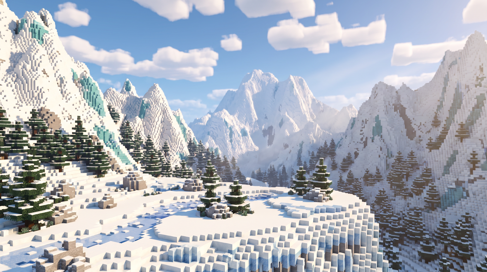
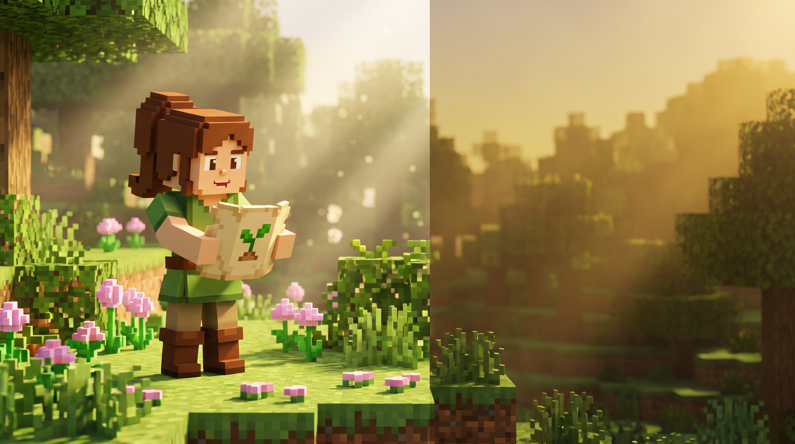
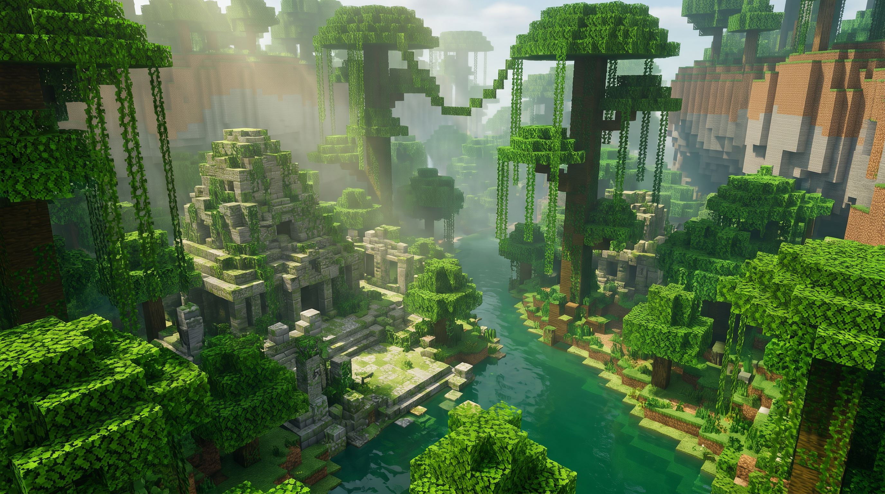
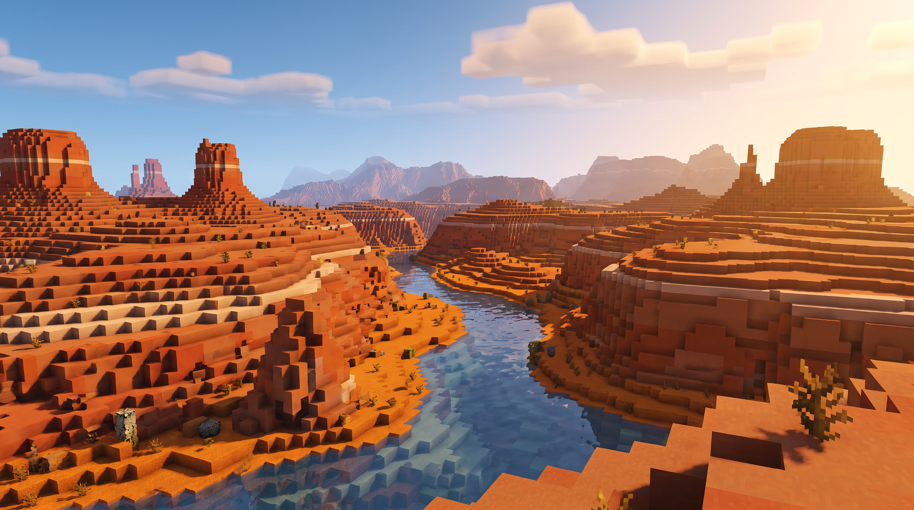

The mountain kingdom
Imagine a sprawling mountain range with dramatic cliffs, deep valleys, cascading waterfalls and villages nestled into the hillsides. The perfect setting for castles, bridges, hidden bases and legendary adventures.

A little imagination. A whole new world.
Find it. Dream it. Grow it.
Your world. Your adventure.
Your imagination.
The beginning of something brilliant
A lonely island surrounded by endless ocean. A peaceful valley hidden between towering mountains. A bustling village waiting to become the heart of your next kingdom.
Sometimes, the perfect world is already out there, just waiting to be discovered.
And sometimes? You have to make it yourself.
Meet Sprout. Your creative companion for discovering incredible Minecraft seeds, exploring new possibilities, and bringing your own worlds to life.
Find somewhere extraordinary. Dream up something impossible. Make it yours.

01 / Find your starting point
Ever spent ages creating new Minecraft worlds, only to find yourself surrounded by endless flat plains when you really wanted dramatic mountains, winding rivers and a cosy little village?
We've been there.
Sprout takes the guesswork out of finding your next favourite world.
Discover Minecraft seeds, explore their landscapes through an interactive map, and search for the kind of adventure you actually want to have.
Whether you're looking for the perfect spot to build your dream home, an epic landscape for your next survival challenge, or somewhere completely unexpected, Sprout helps you find a world worth exploring.
Less searching. More discovering. Even more playing.
02 / Grow an idea
What if your perfect Minecraft world doesn't exist yet?
Perhaps you're dreaming of a medieval kingdom tucked into a mountain valley. Or a chain of tropical islands scattered across a sparkling ocean. Maybe you want an enormous wilderness filled with remote settlements, hidden corners and endless opportunities for adventure.
With Sprout's custom world creation, your imagination becomes the starting point.
Describe the world you'd love to explore, choose the details that matter to you, and let Sprout help shape your ideas into a new Minecraft world.
No complicated world-building software. No need to be a terrain-generation expert.
Just you, your imagination, and a whole lot of possibilities.
Your next adventure doesn't have to be discovered. It can be invented.

A field guide to your imagination
Every world begins with an idea. Here are a few to get those creative blocks moving.

Imagine a sprawling mountain range with dramatic cliffs, deep valleys, cascading waterfalls and villages nestled into the hillsides. The perfect setting for castles, bridges, hidden bases and legendary adventures.
One small island. A vast, unforgiving ocean. Just enough resources to get started. How far can you go with almost nothing?

Ancient forests, winding rivers, peaceful clearings and lakeside villages. Somewhere to build a cabin, start a farm and watch your little corner of the world grow.

Picture enormous landscapes, scattered settlements, ancient-looking ruins and wilderness stretching towards the horizon. A world ready to become the setting for stories of your own.

Towering peaks, isolated islands, dramatic coastlines and unexpected landscapes. Forget ordinary. Dream up somewhere that makes you stop and stare.
One idea can become a thousand adventures.
Built to belong
Beautiful Minecraft worlds aren't just about what you put in them. They're about how everything fits together.
Sprout's terrain-aware world-building approach is designed to work with the natural landscape, helping structures and settlements feel like they belong in their surroundings.
Imagine villages following the contours of a hillside, buildings adapting to uneven ground, and settlements growing naturally across the environment rather than sitting on enormous, artificially flattened platforms.
The result? More believable places, more interesting landscapes and worlds that feel ready to explore.
Less bulldozing.
More belonging.
A world of possibilities
Hunt for a world with exactly the kind of scenery, terrain and opportunities you've been looking for.
Use a visual world map to get a better feel for the landscape and discover places worth visiting.
Turn your ideas and descriptions into the starting point for custom Minecraft environments.
Create landscapes and settlements that work together, giving your adventures a world that feels more natural.
Your creations are yours to keep, explore and build upon. Because the best Minecraft world is the one that feels like yours.
Sprout is designed around on-device world creation, putting creative possibilities directly into your hands.
Room to grow
We believe everyone should be able to discover amazing Minecraft worlds.
That's why seed finding is free.
Explore, discover and find inspiration without paying to hunt for your next adventure.
When you're ready to create something completely your own, Sprout offers paid custom world creation, with options for occasional creators and those who just can't stop dreaming up new worlds.
Whether you're a weekend explorer or an unstoppable world-builder, there's room to grow.
Creative companions
A world is only the beginning. What will you put in it?
Meet Blocksmith, our companion creative project for designing Minecraft-inspired structures, models and builds.
Dream up a cosy cottage, an imposing castle, an elaborate workshop or something nobody's ever seen before.
Sprout is about creating the world around you. Blocksmith is about imagining what belongs inside it.
Two creative tools. Endless opportunities to build, explore and play.
Discover Blocksmith
You don't need to know exactly what you're looking for.
You don't need to be an expert builder.
And you definitely don't need to settle for an ordinary world.
You just need an idea.
So go on. Find that perfect mountain. Discover that hidden valley. Imagine that impossible island.
A whole new world is waiting to grow.
Made with imagination by Wimji.
Sprout is an independent third-party application and is not affiliated with, endorsed by, or associated with Microsoft, Mojang Studios or Minecraft. Minecraft is a trademark of its respective owner.